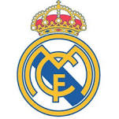

|  | Real Madrid F.C.
Real Madrid Club de Fútbol (Spanish pronunciation: [reˈal maˈðɾið ˈkluβ ðe ˈfuðβol]; Royal Madrid Football Club), commonly known as Real Madrid, or simply as Real, is a professional football club based in Madrid, Spain.
Founded in 1902 as Madrid Football Club, the team has traditionally worn a white home kit since. The word Real is Spanish for Royal and was bestowed to the club by King Alfonso XIII in 1920 together with the royal crown in the emblem. The team has played its home matches in the 81,044-capacity Santiago Bernabéu Stadium in downtown Madrid since 1947. Unlike most European football clubs, Real Madrid's members (socios) have owned and operated the club since its inception.
The club is the most valuable sports team in the world, worth €2.5 billion ($3.4 billion) and the world's highest-earning football club for 2013-14, with an annual revenue of €549.5 million.[6][7][8] The club is one of the most widely supported teams in the world.[9] Real Madrid is one of three founding members of the Primera División that have never been relegated from the top division, along with Athletic Bilbao and Barcelona. The club holds many long-standing rivalries, most notably El Clásico with Barcelona and the El Derbi madrileño with Atlético Madrid.
Real Madrid established itself as a major force in both Spanish and European football during the 1950s. The club won five consecutive European Cups, and reached the final seven times. This success was replicated in the league, where the club won five times in the space of seven years. This team, which consisted of players such as Di Stéfano, Ferenc Puskás, Gento, Raymond Kopa, and Santamaría, is considered by some in the sport to be the greatest team of all time.
In domestic football, the club has won a record 32 La Liga titles, 19 Copa del Rey, 9 Supercopa de España, 1 Copa Eva Duarte, and 1 Copa de la Liga.[14] In international football, the club has won a record 10 European Cup/UEFA Champions League titles and a joint record 3 Intercontinental Cups, as well as 2 UEFA Cups, 2 UEFA Super Cups and a FIFA Club World Cup.
Real Madrid was recognised as the FIFA Club of the 20th Century on 23 December 2000, and named Best European Club of the 20th Century by the IFFHS on 11 May 2010. The club received the FIFA Centennial Order of Merit in 2004. The club is ranked first in the latest IFFHS Club World Ranking, setting a new ranking-points record.[15] The club also leads the current UEFA club rankings.
Real Madrid's origins go back to when football was introduced to Madrid by the academics and students of the Institución Libre de Enseñanza, which included several Cambridge and Oxford University graduates. They founded Football Club Sky in 1897, playing on Sunday mornings at Moncloa. It split into two clubs in 1900: New Foot-Ball de Madrid and Madrid Football Club.[17] On 6 March 1902, after a new Board presided by Juan Padrós had been elected, Madrid Football Club was officially founded.[3] Three years after its foundation, in 1905, Madrid FC won its first title after defeating Athletic Bilbao in the Spanish Cup final. The club became one of the founding sides of the Royal Spanish Football Federation on 4 January 1909, when club president Adolfo Meléndez signed the foundation agreement of the Spanish FA. After moving between grounds the team moved to the Campo de O'Donnell in 1912.[18] In 1920, the club's name was changed to Real Madrid after King Alfonso XIII granted the title of Real (Royal) to the club.[19]King Alfonso XIII allowed the club to use the title of Real (royal)In 1929, the first Spanish football league was founded. Real Madrid led the first league season until the last match, a loss to Athletic Bilbao, meant they finished runners-up to Barcelona.[20] Real Madrid won its first League title in the 1931–32 season. Real won the League again the following year, becoming the first side to have won the championship twice.
Santiago Bernabéu Yeste became president of Real Madrid in 1945.[27] Under his presidency, the club, its stadium Santiago Bernabéu and its training facilities Ciudad Deportiva were rebuilt after the Spanish Civil War damages. Additionally, during the 1950s former Real Madrid Amateurs player Miguel Malbo founded Real Madrid's youth academy, or "cantera", known today as La Fábrica. Beginning in 1953, he embarked upon a strategy of signing world-class players from abroad, the most prominent of them being Alfredo Di Stéfano.